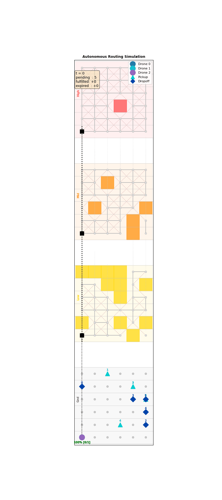

홈으로


물류 최적화
도시 물류, 드론 배송, 지하 물류 네트워크, 비행 창고(Flying Warehouse) 등 복잡한 물류 시스템에서 최적 운영 전략을 연구합니다. 차량-드론 복합 배송, 다중 비행 수준(multi-flight level) 드론 경로 설계, 지하 운송망과 연계된 도시 물류 최적화 등을 다룹니다.

관련 논문
- Jeong, H. Y., Song, B. D. (2025). Optimizing Urban Logistics: VRP with Underground Transportation. IEEE Transactions on Intelligent Transportation Systems.
- Jeong, H. Y., Song, B. D. (2025). Optimization of Urban Logistics with Multi-Modal Systems: Airship-Vehicle Routing Problem. Transportation Research Part E.
- Kim, Y., Jeong, H. Y.*, Lee, S. (2024). Drone delivery problem with multi-flight level: Machine learning based solution approach. Computers & Industrial Engineering.
- Kim, B., Jeong, H. Y.*, Lee, S. (2023). Two-echelon collaborative routing problem with heterogeneous crowd-shippers. Computers & Operations Research.
- Jeong, H. Y., Lee, S.* (2023). Drone routing problem with truck: Optimization and quantitative analysis. Expert Systems with Applications.
- Jeong, H. Y., Song, B. D.*, Lee, S. (2022). Optimal scheduling for multi-flying warehouse: Amazon airborne fulfillment center. Transportation Research Part C.
- Jeong, H. Y., Song, B. D.*, Lee, S. (2020). The flying warehouse delivery system. IEEE Transactions on Intelligent Transportation Systems.
- Jeong, H. Y., David, J. Y., Min, B. C., Lee, S.* (2020). The humanitarian flying warehouse. Transportation Research Part E.
- Jeong, H. Y., Song, B. D.*, Lee, S. (2019). Truck-drone hybrid delivery routing: Payload-energy dependency and No-Fly zones. International Journal of Production Economics.
네트워크 최적화
기후변화 불확실성을 고려한 공급망(supply chain network) 설계 및 적응형 운영 전략, 시뮬레이션 기반 장애 전파·복구 전략과 네트워크 회복력(resilience) 분석, V2G 기반 EV 물류·배전망 통합 운영 등 복잡한 네트워크 시스템의 설계·운영·강건성을 연구합니다.
관련 논문
- Jeong, H. Y., Choi, C.* (2023). Adaptive supply chain system design for fruit crops under climate change. Systems.
- Jeong, H. Y.*, Kim, Y., Lee, S., Moreland, J., Zhou, C. (2023). Disruption propagation and repair response in interdependent systems. Simulation Modelling Practice and Theory.
- (Under review) Choi, C., Jeong, H. Y.*. Integrated approach for long-term capacity expansion and operational scheduling of grid system. Sustainable Energy, Grids and Networks.
- (In preparation) Jeong, H. Y., Song, B. D. Tariff-Aware Heuristic Optimization for Integrated VRP and V2G/G2V Scheduling. IEEE Transactions on Transportation Electrification.
생산 최적화
반도체 팹 등 첨단 제조 시설의 자동화 물류 시스템(OHT, AGV, AMR) 배차·경로 최적화·교통 제어 전략을 시뮬레이션 기반으로 비교·최적화하고, 열간 단조·스탬핑 등 제조 공정의 파라미터 최적화와 머신러닝 통합 FEM 시뮬레이션을 결합하여 생산 처리량과 효율을 극대화하는 연구를 수행합니다.
관련 논문
- Guo, F., Jeong, H. Y., Park, D., Kim, G., Sung, B., Kim, N. (2024). Numerical optimization of variable blank holder force trajectories in stamping. Materials.
- Guo, F.†, Jeong, H. Y.†, Park, D., Sung, B., Kim, N.* (2024). Multi-objective optimization of blank holder force in deep drawing based on DNN-GA-MCS. The International Journal of Advanced Manufacturing Technology.
- Kim, Y., Jeong, H. Y., Park, J., et al. (2023). Optimizing process parameters for hot forging of Ti-6242 alloy: ML and FEM simulation. Journal of Materials Research and Technology.
- Park, J., Kim, Y., Jeong, H. Y., et al. (2023). Cogging process design of M50 bearing steel for billet quality. Journal of Materials Research and Technology.
- Jeong, H. Y., Park, J., Kim, Y., Shin, S. Y., Kim, N.* (2023). Processing parameters optimization in hot forging of AISI 4340 steel using instability map and RL. Journal of Materials Research and Technology.
차세대 최적화
메타러닝(meta-learning), 강화학습, 신경망 기반 해법을 활용한 조합 최적화 문제 해결 및 양자 컴퓨팅(quantum computing) 기반 알고리즘 개발 등 미래 지향적 최적화 기법을 연구합니다. 인공지능과 운영과학의 융합을 통해 복잡계 문제에 도전합니다.
관련 논문
- Jeong, H. Y., Song, B. D. (2025). Meta-Learning-Based Adaptive Operator Selection for Traveling Salesman Problem. Applied Soft Computing.
- Jeong, H. Y., Song, B. D. (2025). Optimizing Urban Logistics: VRP with Underground Transportation. IEEE Transactions on Intelligent Transportation Systems.
- Jeong, H. Y., Song, B. D. (2025). Optimization of Urban Logistics with Multi-Modal Systems: Airship-Vehicle Routing Problem. Transportation Research Part E.
- Kim, Y., Jeong, H. Y.*, Lee, S. (2024). Drone delivery problem with multi-flight level: Machine learning based solution approach. Computers & Industrial Engineering.